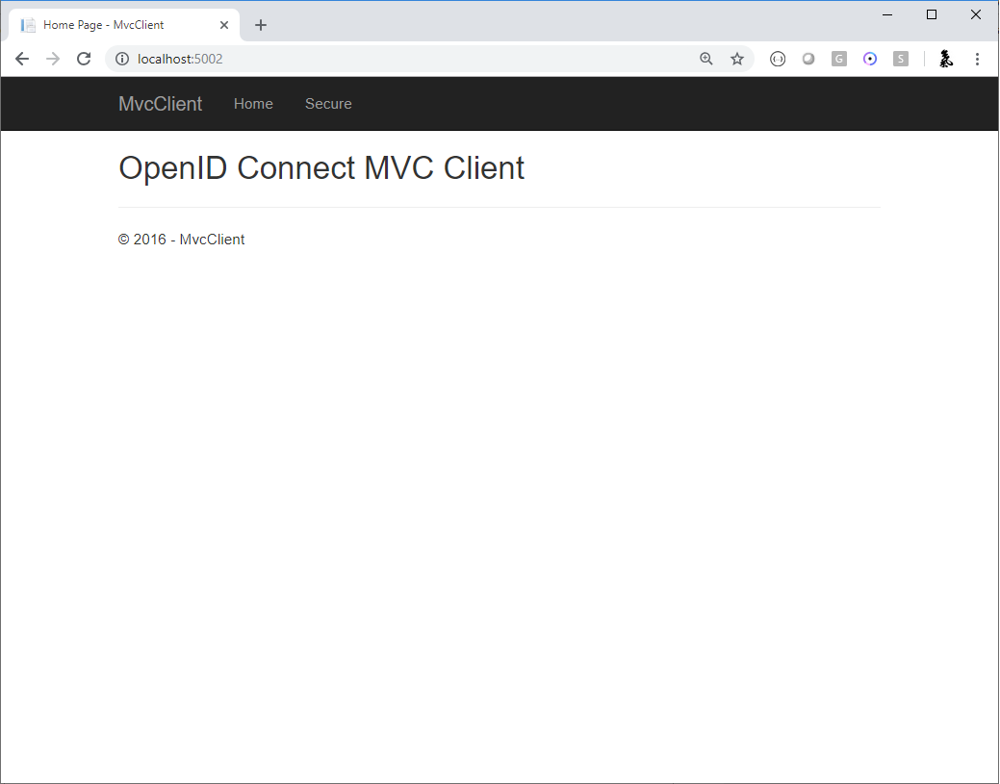
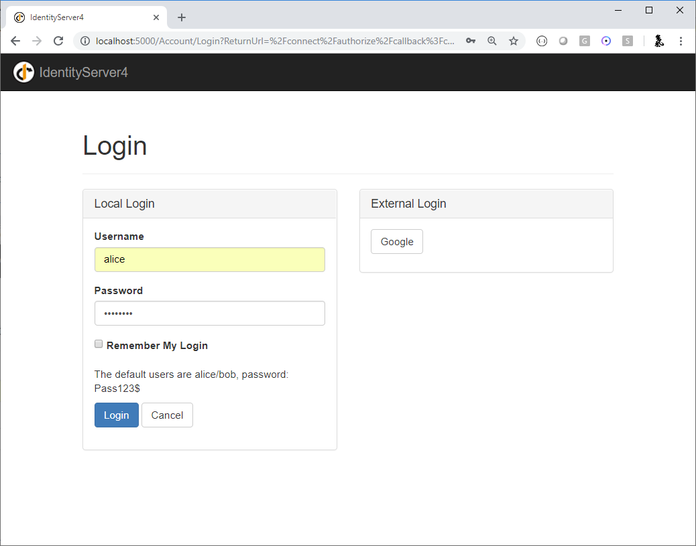
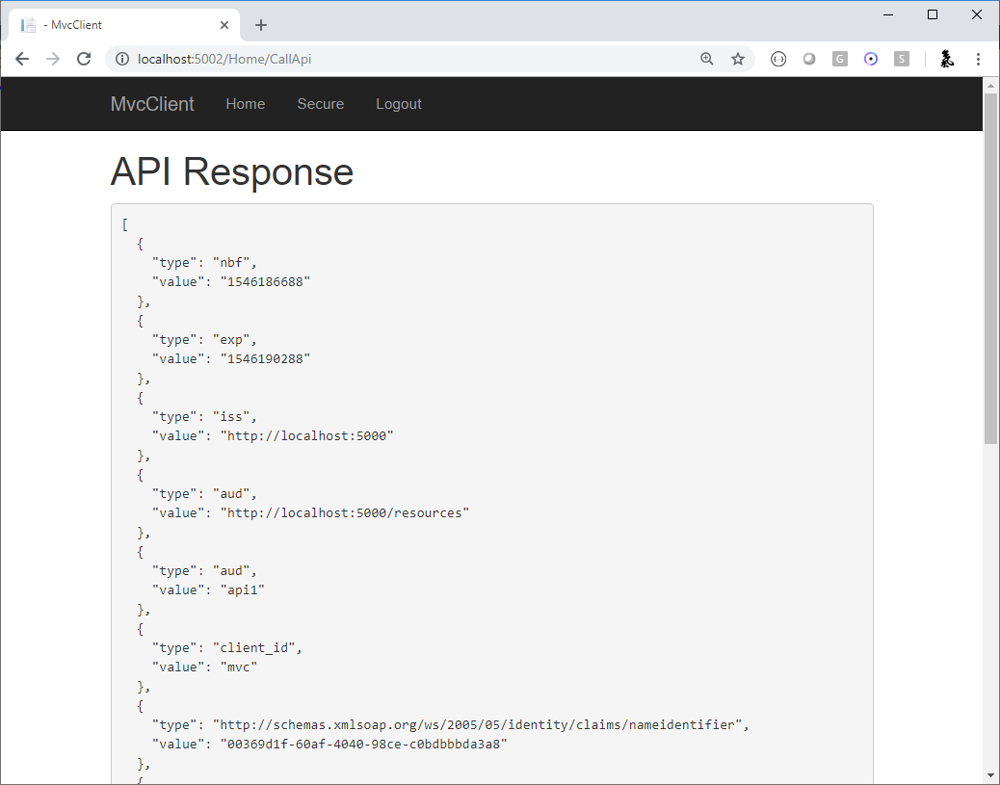

使用 ASP.NET Core Identity¶
注解
对于任何先决条件（例如模板），请先查看 概述 。
IdentityServer 旨在提供灵活性，其中一部分是允许您为您的用户及其数据（包括密码）使用您想使用的任何数据库。 如果您开始使用新的用户数据库，则 ASP.NET Core Identity 是您可以选择的一个选择。 本快速入门展示了如何将 ASP.NET Core Identity 与 IdentityServer 结合使用。
本快速入门使用 ASP.NET Core Identity 的方法是为 IdentityServer 主机创建一个新项目。 这个新项目将取代我们在之前的快速入门中建立的先前 IdentityServer 项目。 这个新项目的原因是由于使用 ASP.NET Core Identity 时 UI 资产的差异（主要围绕登录和注销的差异）。 此解决方案中的所有其他项目（针对客户端和 API）将保持不变。
注解
本快速入门假设您熟悉 ASP.NET Core Identity 的工作原理。 如果不是，建议先 了解一下。
新的 ASP.NET Core Identity 项目¶
第一步是将 ASP.NET Core Identity 的新项目添加到您的解决方案中。 我们提供了一个模板，其中包含 ASP.NET Core Identity 和 IdentityServer 所需的最少 UI 资产。 您最终将删除 IdentityServer 的旧项目，但您需要迁移一些项目。
首先创建一个将使用 ASP.NET Core Identity 的新 IdentityServer 项目:
cd quickstart/src
dotnet new is4aspid -n IdentityServerAspNetIdentity
当提示 "seed" 用户数据库时，选择 "Y" 作为 "yes"。 这将使用我们的 “alice” 和 “bob” 用户填充用户数据库。 他们的密码是 “Pass123$”。
注解
该模板使用 Sqlite 作为用户的数据库，并且在模板中预先创建了 EF 迁移。 如果您希望使用不同的数据库提供程序，则需要更改代码中使用的提供程序并重新创建 EF 迁移。
检查新项目¶
在您选择的编辑器中打开新项目，并检查生成的代码。 请务必查看：
IdentityServerAspNetIdentity.csproj¶
注意对 IdentityServer4.AspNetIdentity 的引用。 此 NuGet 包包含 IdentityServer 的 ASP.NET Core Identity 集成组件。
Startup.cs¶
在`ConfigureServices` 中注意必要的 AddDbContext<ApplicationDbContext> 和 AddIdentity<ApplicationUser, IdentityRole> 调用来配置 ASP.NET Core Identity。
另请注意，您在之前的快速入门中所做的大部分相同 IdentityServer 配置已经完成。 该模板对客户端和资源使用内存中的样式，它们来自 Config.cs。
最后，注意添加了对 AddAspNetIdentity<ApplicationUser> 的新调用。
AddAspNetIdentity 添加了集成层以允许 IdentityServer 访问 ASP.NET Core Identity 用户数据库的用户数据。
当 IdentityServer 必须将用户的声明添加到令牌中时，这是必需的。
注意 AddIdentity<ApplicationUser, IdentityRole> 必须在 AddIdentityServer 之前调用。
Config.cs¶
Config.cs 包含硬编码的内存客户端和资源定义。 为了让相同的客户端和 API 像之前的快速入门一样工作，我们需要将旧 IdentityServer 项目中的配置数据复制到这个项目中。 现在这样做，之后 Config.cs 应该是这样的:
public static class Config
{
public static IEnumerable<IdentityResource> IdentityResources =>
new List<IdentityResource>
{
new IdentityResources.OpenId(),
new IdentityResources.Profile(),
};
public static IEnumerable<ApiScope> ApiScopes =>
new List<ApiScope>
{
new ApiScope("api1", "My API")
};
public static IEnumerable<Client> Clients =>
new List<Client>
{
// 机器对机器客户端
new Client
{
ClientId = "client",
ClientSecrets = { new Secret("secret".Sha256()) },
AllowedGrantTypes = GrantTypes.ClientCredentials,
// 客户端有权访问的范围
AllowedScopes = { "api1" }
},
// interactive ASP.NET Core MVC client
new Client
{
ClientId = "mvc",
ClientSecrets = { new Secret("secret".Sha256()) },
AllowedGrantTypes = GrantTypes.Code,
// 登录后重定向到哪里
RedirectUris = { "https://localhost:5002/signin-oidc" },
// 注销后重定向到哪里
PostLogoutRedirectUris = { "https://localhost:5002/signout-callback-oidc" },
AllowedScopes = new List<string>
{
IdentityServerConstants.StandardScopes.OpenId,
IdentityServerConstants.StandardScopes.Profile,
"api1"
}
}
};
}
此时，您不再需要旧的 IdentityServer 项目。
Program.cs 和 SeedData.cs¶
Program.cs 的 Main 与大多数 ASP.NET Core 项目略有不同。
请注意这如何查找名为 /seed 的命令行参数，该参数用作在 ASP.NET Core Identity 数据库中为用户提供种子的标志。
查看 SeedData 类代码以了解如何创建数据库以及如何创建第一个用户。
AccountController¶
此模板中要检查的最后一个代码是 AccountController。
这包含与之前的快速入门和模板略有不同的登录和注销代码。
请注意使用 ASP.NET Core Identity 中的 SignInManager<ApplicationUser> 和 UserManager<ApplicationUser> 来验证凭据和管理身份验证会话。
其余大部分代码与之前的快速入门和模板相同。
使用 MVC 客户端登录¶
此时，您应该能够运行所有现有的客户端和示例。
一个例外是 ResourceOwnerClient ——密码需要从 password 更新为 Pass123$。
启动 MVC 客户端应用程序，您应该能够单击“安全”链接以登录。
您应该被重定向到 ASP.NET Core Identity 登录页面。 使用您新创建的用户登录：
登录后，您会看到正常的同意页面。 同意后，您将被重定向回 MVC 客户端应用程序，您的用户声明应在其中列出。

您还应该能够点击 "Call API using application identity" 以代表用户调用 API：
现在，您正在 IdentityServer 中使用来自 ASP.NET Core Identity 的用户。
缺少了什么？¶
此模板中的大部分其余代码与我们提供的其他快速入门和模板类似。 您会注意到此模板中缺少的一件事是用于用户注册、密码重置的 UI 代码，以及您可能期望从 Visual Studio ASP.NET Core Identity 模板中获得的其他内容。
鉴于使用 ASP.NET Core Identity 的各种要求和不同方法，我们的模板故意不提供这些功能。 您应该了解 ASP.NET Core Identity 如何工作得足够好，以便将这些功能添加到您的项目中。 或者，您可以基于 Visual Studio ASP.NET Core Identity 模板创建一个新项目，并将您在这些快速入门中了解的 IdentityServer 功能添加到该项目。